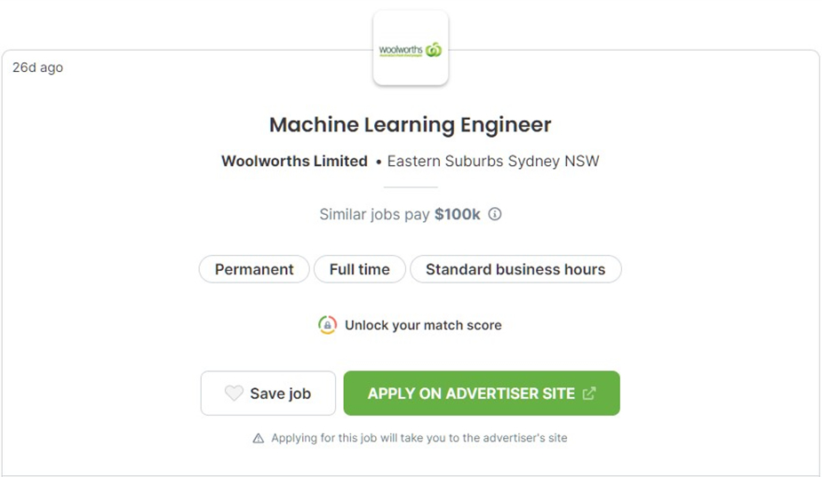
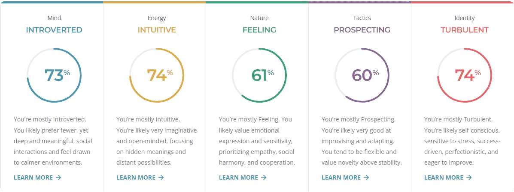
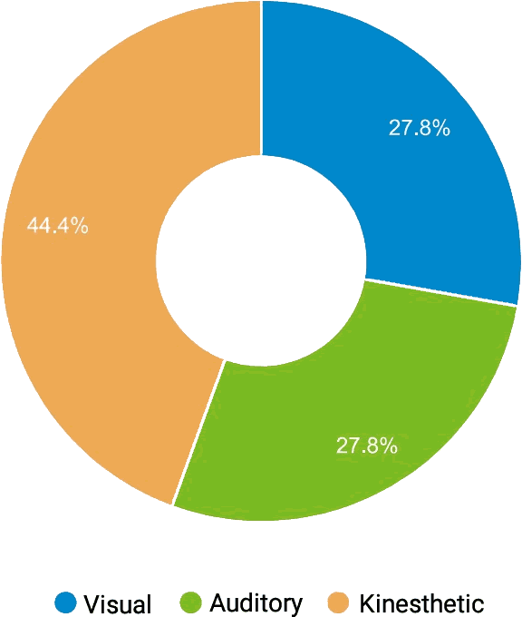

Clive Payton

Personal Info
Name: Clive Payton
Student Number: S3311370
Student Email Address: s3311370@student.rmit.edu.au
Basic Backround:
I was born in Pretoria, South Africa and lived there until I was eight years old. My family then relocated to Auckland, New Zealand, where I finished primary school and attended high school. My family moved once again to Cairns, Australia, where I attended my final year of schooling. I have dabbled in several different tertiary pursuits, but due to a broad range of interests, every avenue felt like it was closing the door on others. I am very interested in a very broad range of topics related to science, technology, and philosophy. I would love to combine a degree in science with IT.
Interest in IT
What is your interest in IT? When did your interest in IT start?
In 1994 my father brought home a decomissioned IBM PS2 286 from work for me to tinker with. I was already very interested in how things worked, perhaps this was why he thought it best suited for me. This PC had nothing more than the DOS command line, definitely no internet. I would spend a lot of time trying to determine exactly what I could do with this machine, which included me buying 286 compatible 3.5 inch floppy disk games and programs from clearance bins. Seeing that I had an interest in technology my parents, without any request from me, bought me a Sony Playstation very early after their first release. Coming from a 286 with limited VGA gaming, my mind was obviously blown. Shortly thereafter we got a new Hewlett Packard Desktop PC, with the internet! In the following years I taught myself how to code, html, css, javascript, and php. I landed up doing PC repairs for people and decided to get a job in this area. After realizing I was more interested in coding, I pursued a career as a web developer, but alas after a while this felt too limited in scope to truly make my mark on the world.
Why did you choose to come to RMIT?
Having attempted to be a web developer, mostly self taught, I realized there were often times where my knowledge fell short and was untimately incomplete. Hence, I decided to come to RMIT for a number of reasons. Firstly, to fill in the afformentioned knowledge gaps and build upon them. Secondly, to develop an ethic for learning and adapting, specifically with regard to technology. Finally, for the structured and highly focused education outlined by expert academics in the field of IT.
What do you expect to learn during your studies?
I would like to develop a broad range of understanding in IT, both theoretical and practical. Hence, I would like to become proficient in programming and software development. Understanding the paradigms of programming and data manipulation and an ability to adapt them readily to new languages, frameworks, and software if required. Additionally, I would like to learn to collaborate with others to achieve objectives, especially those that require parallelism for expeditiosness.
Ideal Job
Machine Learning Engineer
The use of data, usually large sets, to help machines/systems make the best decisions decisions for an organization for a particular purpose. In this instance, it would be helping Woolworths improve CRM, instore and online efficiencies, customer targeting, etc. This appeals to me because the next industrial revolution, which is already upon us, is predicated on artificial intelligence and being at the forefront will allow one to take full advantage of the consequent emerging opportunities.
The position requires an applicant to be able to design and build a state-of-the-art machine learning platform collaboratibvely with other ML developers and data scientists. Hence, the skills include:
- Extremely good communication
- Focus with attention to detail
- Well understood deligation of objectives and workload
The qualifications and experience for this position include:
- Bacherlors degree or above in Computer science
- Two or more years of commercial software development
- Well versed in popular AI/ML associated programming languages and SQL
- Good grasp of Unix systems
- Strong knowledge of data structures and algorithms
- Practical experience with developing production grade ML projects
In terms of skills, as I have laid it out above, I have largely worked on projects alone, except for interactions with customers about their requirements.
In terms of qualifications, I currently have only two of the above-mentioned. Firstly, I have a decent understanding of Python and SQL. Secondly, I have been using linux desktops on and off for many years and have dealt with the linux command line for several different tasks
To obtain the requisite skills to become a machine learning engineer I would need to do the following:
- Complete bachelor’s degree in computer science, taking electives such as:
- Advanced Programming Techniques
- Cloud Computing
- Unix Systems Administration and Programming
- Because ML is a data science it is dependent on statistics and calculus. Thus, I would need to find classes or courses in descriptive and inferential statistics, calculus, and linear algebra.
- Take short courses in AI and potentially more specifically ML. RMIT offers Future Skills Short Courses in AI Programming with Python, Develoiping AI Strategy, and Intro to Machine Learning.
- Obtain an entry level software development job, hopefuly with some focus on ML. Develop a range of skills over a number of years.
Personal Profile
1. Results of online Myers-Briggs test (16Personalities):
Mediate Personality INFP-T
2. Results of online learning style test (Learning Style Quiz):
Learning Style Distribution:
3. Results of online The Big Five Personality Test (Truity):
| Openness | Conscientiousness | Extraversion | Agreeableness | Neuroticism |
|---|---|---|---|---|
| 85% | 31% | 58% | 81% | 69% |
These results of the three tests are not entirely suprising. Firstly, with regards to the Myers-Briggs test, provided my significant level of introversion I would suggest a compensatory counterbalance of extraverted group members. My level of turbulence is also quite high, which perhaps means people who are less sensitive to stress would be a necessary compliment. Secondly, from the learning style distribution, my proclivity towards kinesthetic, being almost double my auditory and visual learning, would suggest I need to interact more physically, if possible, with any potential project. Finally, I think I found the The Big Five Personality Test the most interesting and perhaps most useful for determining my behaviour in a team. My openness and agreeableness are quite high, which means I would work with a wide range of ideas and personalities. My neuroticism would mean that I have negative considerations, that might not be an entirely accurate reflection of reality and cause me to lose motivation. In addition to this and perhaps the most concerning, and something that I need to work on, is my low concscientiousness. Being able to be a valuable member of any team requires a consistent work ethic and thus realiability. This might be counteracted with a motivating personality.
Project Idea
Overview:
The project will be a solar powered water quality checker. This will be a self-contained unit that using primarily colorimetry, and perhaps secondary sensors such as conduction, will determine what contaminants, if any, exist in a body of water in which the device is placed. It will provide periodic updates both on an onboard LCD/LED screen and over the air broadcasts to provide greater insight to a cloud connected smart phone application. The cloud connected application will be able to leverage machine learning capabilities to make more concise measurements over time and improve the capabilities of the device.
Motivation
Drinkable water is one of the most valuable and scare resources around the world. The US National Academics of Sciences, Engineering, and Medicine determined that men require ~3.7 L and women ~ 2.7 L of water a day (Mayo Clinic, 2020). The gobal population more than three times larger than it was in the middle of the twentieth century. The population will reach 8.0 billion in November 2022 from an estimated 2.5 billion people in 1950 (United Nations, 2022). Hence, it is now more important than ever for people to be able to source drinkable water, or even sufficiently safe water for use in a variety of other purposes.
Description:
The Device:
The Solar Powered Water Checker as the name suggest is a solar powered device that sits/floats in any body of water utilizing 3D printing and IOT technologies to check the quality/safety of water. For stability the device will need to be semi submerged, having a weight, or perhaps having a resivoir that takes on some water. A channel that sits between the components of a colorimeter will have water freely moving through it. One side of the channel will have a beam of different coloured light, derived from a pure white light, that will shine directly into the water. On the alternate side of the beam source will be a light reciever/sensor. The colorimeter will be attatched to a Raspberry Pi board through IO pins where the signals will be read and interpreted by a Python application and stored in a MySQL database. After intepretation an onboard LCD screen, near the top of the device, will give a summary of the water and provide simple guidance for drinkability or useability for certain purposes. This will all be powered by a solar panel affixed to the top of the device, and a battery for backup.
The Mobile App:
Being an IOT device, The Solar Powered Water Checker will be accompanied by a multi-platform mobile application, developed in a somewhat future-proof platform like Dart, that can provide users with more detailed analysis. This application will utilize the phone’s bluetooth to connect to the device. Once the connection is established the mobile application will access an API running on The Solar Powered Water Checker’s Python application, to pull/sync any new data. The mobile application, while having local data stores and analysis capabilities, will further leverage a cloud-based server application that uses and open-source machine learning system like TensorFlow.
The Server App:
As mentioned above, a server application will store data uploaded from The Solar Powered Water Checker mobile application and then parse the data through TensorFlow looking for particular patterns. The server application will then push any data interpretation changes to the mobile application to provide the user with the most up to date information.
Tools and Technologies
Hardware:
The hardware for The Solar Powered Water Checker project will include:
- A 3D printed water-proof enclosure/chasis, at least for areas housing electronic components.
- A solar panel
- A bakcup rechareable battery
- A small LCD or LED panel to show most critical information i.e., is water safe for consumption.
- A Colorimeter. This could be a simple add on module, or custom/purpose built.
Software:
The software for The Solar Powered Water Checker project will include:
- A Python application to read input data from colorimeter and interpret the colour spectra absorption because of the presence of different compounds.
- An open-source database, like MySQL, to store data. This is very important incase a bluetooth transmit was unsuccessfull. A database will allow a data pull request API./li>
- An open-source 3D printing compatible CAD software like Blender.
Skills Required:
The skills required for The Solar Powered Water Checker project will include:
- Understanding of colorimetry and the directly related physics involved.
- Basic understanding of electronics.
- Python programming to create an application that reads input data from a colorimeter attatched to a Raspberry Pi board. This application will also need to access a local MySQL database to store and retrieve data. Finally, the application will need to push data at user set intervals over bluetooth.
- Python programming to create a cloud-based server application that leverages TensorFlow.
- 3D Printing.
- CAD Design.
- Cross-platform mobile application delopment using Flutter or React Native. The mobile application will need to get updates from The Solar Water Checker over bluetooth. It will largely act as a middleware between The Solar Water Checker and a cloud-based server application.
Outcome:
If The Solar Powered Water Checker project is successful it will be able to help million of people across the world determine the quality of any body of water and thus the applicability for consumption or other use. The exciting part is the synergy that could be provided ML capabilities in data interpretation and the ever-growing understanding of the impact of certain compounds on organisims. This will almost certainly yeild novel information and additionaly, or consequently, lead to improved agricultural and industrial practices in relation to water quality.